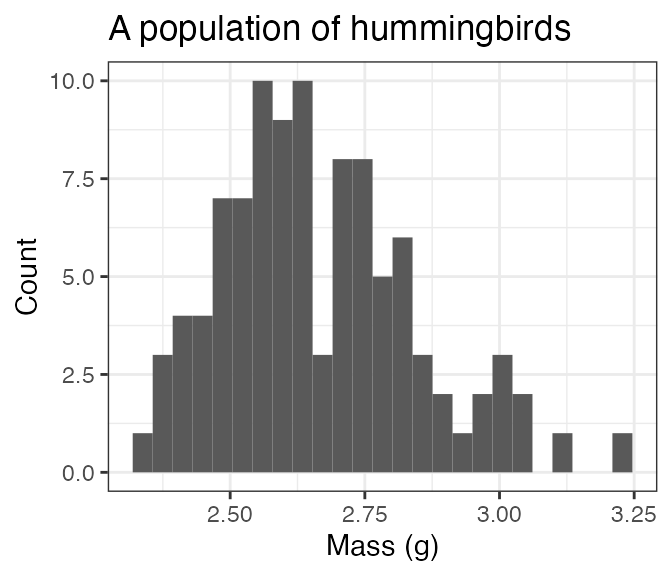
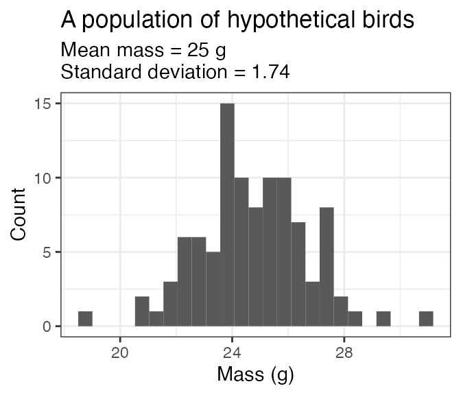

Simulate populations of individuals of a single species
The core functionality of birdsize is to simulate individual body mass measurements for birds given either their species ID or a mean (and possibly standard deviation) of body mass. pop_generate achieves this for a single species. comm_generate uses pop_generate to simulate body masses for multiple populations of birds of different species.
Using species identity
For most birds in the North American Breeding Bird Survey, you can use the species’ code (AOU) to simulate a population directly. For the hummingbird Selasphorus calliope:
a_hundred_hummingbirds <- pop_generate(abundance = 100, aou = 244)
head(a_hundred_hummingbirds)
#> aou id genus species individual_mass mean_size sd_size abundance
#> 1 244 244 Selasphorus calliope 2.556333 2.65 0.1828933 100
#> 2 244 244 Selasphorus calliope 3.104524 2.65 0.1828933 100
#> 3 244 244 Selasphorus calliope 2.834325 2.65 0.1828933 100
#> 4 244 244 Selasphorus calliope 2.703554 2.65 0.1828933 100
#> 5 244 244 Selasphorus calliope 2.611783 2.65 0.1828933 100
#> 6 244 244 Selasphorus calliope 2.989833 2.65 0.1828933 100
#> sd_method
#> 1 AOU lookup
#> 2 AOU lookup
#> 3 AOU lookup
#> 4 AOU lookup
#> 5 AOU lookup
#> 6 AOU lookup
ggplot(a_hundred_hummingbirds, aes(individual_mass)) +
geom_histogram(bins = 25) +
xlab("Mass (g)") +
ylab("Count") +
ggtitle("A population of hummingbirds") 
To look up the AOU based on the species’ scientific name, explore the included sd_table dataset:
sd_table
#> # A tibble: 421 × 6
#> species_id genus species mean_mass mean_sd contains_estimates
#> <int> <chr> <chr> <dbl> <dbl> <lgl>
#> 1 27 Alopochen aegyptiaca 1873 133. TRUE
#> 2 28 Cairina moschata 2450 175. TRUE
#> 3 77 Ortalis vetula 563 55 FALSE
#> 4 85 Oreortyx pictus 233 16.4 TRUE
#> 5 90 Colinus virginianus 172 12.1 TRUE
#> 6 92 Callipepla squamata 184 13.0 TRUE
#> 7 94 Callipepla californica 166. 14.3 TRUE
#> 8 95 Callipepla gambelii 166 11.7 TRUE
#> 9 96 Cyrtonyx montezumae 186. 16.8 FALSE
#> 10 100 Alectoris chukar 504. 35.6 TRUE
#> # … with 411 more rowsUsing a known mean and standard deviation
Alternatively, you can simulate body masses for a population by supplying the body size parameters yourself. This may be useful if you would like to work with a species not included in the sd_table, test sensitivities to different parameter ranges, or generate values for simulation/null models (or, other applications!).
Note that, if both mean mass and a species code are provided, the species code will be used and the mean mass provided will be ignored!
a_hundred_hypotheticals <- pop_generate(abundance = 100, mean_size = 25, sd_size = 3)
head(a_hundred_hypotheticals)
#> aou id genus species individual_mass mean_size sd_size abundance
#> 1 NA 1 <NA> <NA> 19.86281 25 3 100
#> 2 NA 1 <NA> <NA> 22.60234 25 3 100
#> 3 NA 1 <NA> <NA> 20.76744 25 3 100
#> 4 NA 1 <NA> <NA> 26.59827 25 3 100
#> 5 NA 1 <NA> <NA> 23.80690 25 3 100
#> 6 NA 1 <NA> <NA> 24.14694 25 3 100
#> sd_method
#> 1 Mean and SD provided
#> 2 Mean and SD provided
#> 3 Mean and SD provided
#> 4 Mean and SD provided
#> 5 Mean and SD provided
#> 6 Mean and SD provided
ggplot(a_hundred_hypotheticals, aes(individual_mass)) +
geom_histogram(bins = 25) +
xlab("Mass (g)") +
ylab("Count") +
ggtitle("A population of hypothetical birds", subtitle ="Mean mass = 25 g\nStandard deviation = 3") 
Using a known mean, but no standard deviation
If the mean mass is not known or not provided, simulate_population will estimate the standard deviation based on scaling between the mean and standard deviation of body mass:
another_hundred_hypotheticals <- pop_generate(abundance = 100, mean_size = 25)
head(another_hundred_hypotheticals)
#> aou id genus species individual_mass mean_size sd_size abundance
#> 1 NA 1 <NA> <NA> 26.24259 25 1.743992 100
#> 2 NA 1 <NA> <NA> 21.45239 25 1.743992 100
#> 3 NA 1 <NA> <NA> 20.80068 25 1.743992 100
#> 4 NA 1 <NA> <NA> 23.76115 25 1.743992 100
#> 5 NA 1 <NA> <NA> 22.17548 25 1.743992 100
#> 6 NA 1 <NA> <NA> 22.58924 25 1.743992 100
#> sd_method
#> 1 SD estimated from mean
#> 2 SD estimated from mean
#> 3 SD estimated from mean
#> 4 SD estimated from mean
#> 5 SD estimated from mean
#> 6 SD estimated from mean
ggplot(another_hundred_hypotheticals, aes(individual_mass)) +
geom_histogram(bins = 25) +
xlab("Mass (g)") +
ylab("Count") +
ggtitle("A population of hypothetical birds", subtitle ="Mean mass = 25 g\nStandard deviation = 1.74") 